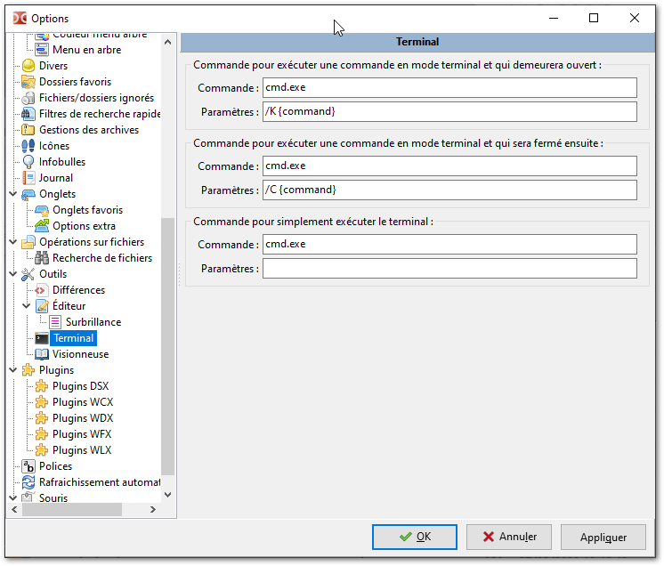
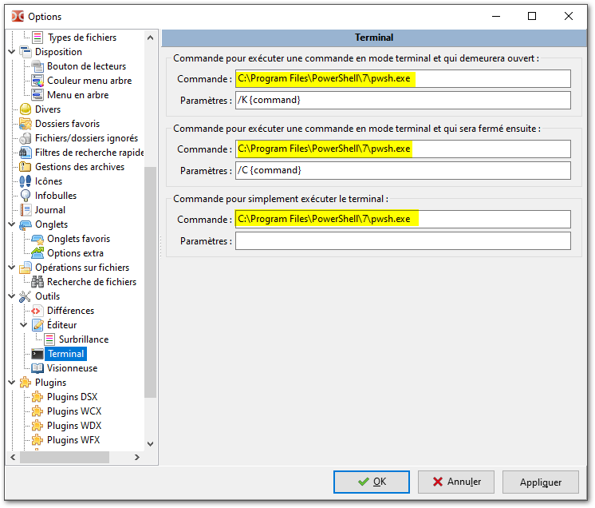

Powershell 7
{kind=link}
-
Powershell 7 exécute toutes les commandes de compilation des documents sources Asciidoc vers les documents de sortie PDF & HTML
-
Powershell 7 exécute une grande partie des commandes utilisées sous linux/Unix. Ainsi, si vous trouvez une documentation vous indiquant une compilation destinée à effectuer un téléchargment (wget, curl), une transformation d’image (imagemagick), une mise à jour de dépôt (git) etc. et que cela concerne un ordinateur sous linux ou apple, cela sera potentiellement réalisable avec Powershell 7
| Powershell 7 est différent de Windows Powershell qui lui est installé par défaut dans Windows10 : pour nous, simples "rédacteurs" de ressources, il fait la même chose (exécuter des commandes), mais en mieux. Son comportement se rapproche de la ligne de commande sous linux, l’historique de ces commandes persiste entre chaque sessions, etc. |
| l’intégration de Powershell 7 avec Visual Studio Code est idéale |
Installation
Prérequis
-
Windows10
-
et quoi d’autre ?
Téléchargement
-
Lien vers le paquet
.mside la toute dernière version Powershell 7.0.0.0.rc3 -
Télécharger & installer
Usage
On dispose maintenant de 3 type de ligne de commande sur Windows :
-
cmd.exe -
Windows Powershell -
Powershell 7
Il s’agit de configurer les logiciels importants afin qu’ils utilisent Powershell 7.
Powershell 7 avec Double Commander
Le raccourci F9 lance cmd.exe par défaut → indiquons à Double Commander d’utiliser Powershell 7
-
Accès par le menu : 
-
Changement de l’exécutable par défaut pour Powershell 7 
Un redémarrrage de l’application est nécessaire pour que ces modifications prennent effet.
Powershell 7 avec Visual Studio Code
En affichage plein écran, le "terminal" se trouve en bas.
Pour passer à Powershell 7, un menu déroulant permet de choisir cet "interpréteur de commandes" par défaut.
Un redémarrage de l’application est nécessaire pour que ces modifications prennent effet.
{kind=link}